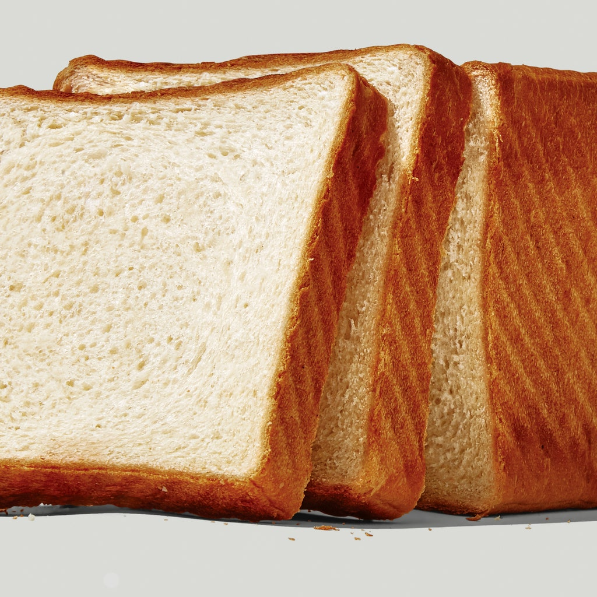
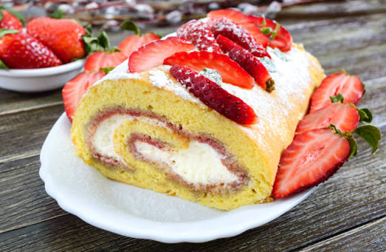
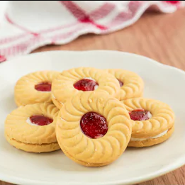
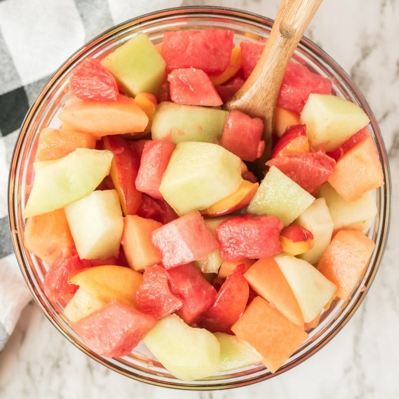
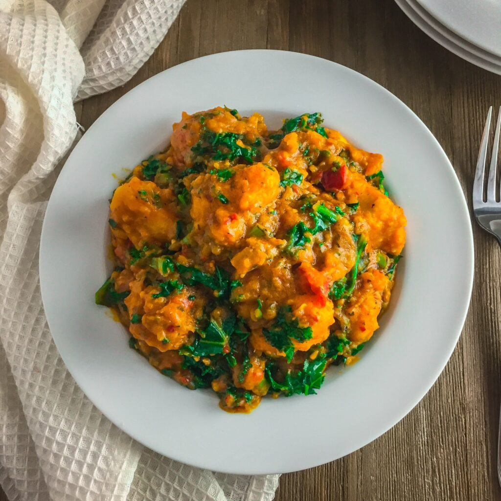
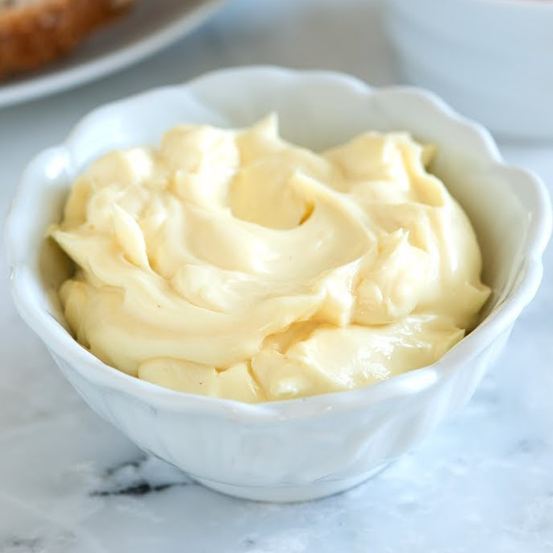

Warm 1/3 of tin-milk and pour in a bowl. Add yest and 1 tbs of sugar.
Mix the mixture well and allow it to bloom for 10 mins
Put the flour in another bowl, pour the remaining sugar in it, add a pinch of salt, egg and melted butter. Mix till it becomes smooth. Pour the yeast powder into the mixture and mix till it becomes smooth
Grease another bowl with oil and transfer the dough in it. Cover with nylon and a towel. Leave for 1hr (The first proofing).
After an hour, dust your working table with flour, punch the dough in the bowl to bring our any air bubble trapped inside
Transfer the dough to the working table and knead very well. Roll it out with a dusted rolling pin, and fold it to a rectangular shape (ensure it is neat). Transfer it to the frying pan and cover with a nylon for 30 minutes
Prepare your oven, set it to medium heat, and leave to heat up for 10 minutes. Open thte pan, grease the top of the dough with egg and oil (this is to make the top brownish). Put the pan in the oven and bake for 20 - 25 minutes

Milk Bread
Butter Icing
Ingredients
Icing-sugar (500g)
Margaring (250g)
1/8 tea-spoon of salt
1 tea-spoon of flavour
4 tablespoon-full milk
water (optional)
NB: 500g icing covers 6inches cake
Procedures
Butter Icing serves as a yummy topping for cakes, biscuits and a lot more. it is also used as a coating for cakes before covering with fondants. Butter cream is very easy to work with with the right knowledge and technique.
Place the soft butter in a wide bowl and beat until it is white, light and fluffy
Then, gradually add the icing sugar and continue beating until the mixture of fluffy again
Finally, add the milk and vanilla (if you are using any), and beat until it is well combined and smooth.
Now you have a yummy butter icing (butter cream icing) for your cake frosting, icing and decorations
Butter Cream
Sausage roll
Ingredients
2.5 cups of plain flour
4 tbs Margarine
1 egg
1 tbs baking powder
6-8 tbs water
2 hgreen onions
1 onion (small finely chopped)
Cayenne pepper to taste
2 tbs sugar
Procedures
Add the flour, baking powder, salt, cold margarine and butter in a bowl, then use the tip of your finger to rub the fat into the flour until a crumbly texture is formed.
Add a little water at a time until a stiff dough is formed.
Knead the dough for a few seconds to a minute and set aside (Dont over-work the douogh!)
Season the sausage with the stock cube and mix together thoroughly
Now, roll out the pie dough to a rectangle of about 1/6th to 1/8th if an inch thick and trim of the rough edges
Scoop in the sausage meat and form it into a long then roll it over until it overlaps a little bit, and trim off the excess patry.
Cut the rolled pie into the desired length and arrange the rolls into a pre-greased and flavoured pan. You can make a decoration over the rolls by using a knnife to make a mark on the pie, or use a fork to poke it
Make the egg wash by whisking together 1 egg and a tablespoon of water and brush this on the surface of the sausagerolls and bake in a 350 degrees Farenheit preheated oven for 30 - 35 minutes
NB: For a more delicate pastry, I use a combination of butter and margarine. But it's not compulsory
Sausage Roll
Jam Roll
Ingredients
6 spoons of sugar
1 spoon milk flavour
1/2 nutmeg
3 spoons of yeast
1/2 of 250g magarine
1kg flour
1 egg
Water
Procedures
Mix the flour and butter together, add the egg afterwards and mix thorougly
Add the warm water and mix well to incoporate
On a well floured board, knead your dough until soft and smooth
Cut out little by little, open and put the jam inside
Mould it together round to cover the jam inside.
Cover to rise and fry in moderate hot oil
Serve as snacks

Jam Roll
Buns
Ingredients
3 cups of flour
1/4 cup of sugar
2 tea-spoons of baking powder
A pinch of salt
3 Eggs
1/4 satchet of butter
A tin of milk
Procedures
put the flour in a bowl, add sugar, baking powder, salt and mix thoroughly.
Then, add the eggs, butter and milk
Mix till it is smooth
Put the oil on fire, and fry the dough till it becomes golden brown
Buns
Strawberry Biscuit
Ingredients
4 cups of flour
1/2 cup of sugar
4 raw eggs(1 for egg washing)
2 caps of strawberry flavor
1 cap of vanilla essence
3/4 satchet of margarine
Milk flavour
Pinch of salt
Bi-carbonate
Nutmeg
Preservatives
Procedures
Sieve flour in a bowl and add 3 level teaspoon of bicarbonate
Cream sugar and margarine in a bowl until fluffy or creamy
Add the well beaten eggs, little by little, continue creaming as you add the egg
Lightly fold in your sieved flour to a stiff rollable dough Knead lightly on a pastry board.
Cut with pastry or biscuit cutter. Place on a greased baking tray, Egg-wash and bake in oven for 40-50mins.
Serve as snacks

Strawberry Biscuit
Fruit Salad
Ingredients
Carrots (Minimum of 10)
1 Medium cabbage
2 Medium cucumbers
1 bulb lettuce
300g baked beans
4 hard boiled eggs
400g sweet corn
2 Medium onion
1 Heinz salad cream
Procedures
Fruit Salad is a preparation of vegetables ,as lettuce,celery,water cress,onions etc usually dressed with salt,vinegar ,oil and spice. It is a natural source of fibre,healthy,nutritious food and a perfect dish* .
Peel and grate the carrots
Slice the cabbage into thin shreds
Slice the cabbage into thin shreds
Cut the hard boiled eggs thinly
NOTE: Wash them all and place them all in separate bowls

Fruit Salad
Yam porridge
Ingredients
1/2 of a medium sized Puna Yam
1 medium sized Onion - diced
11/2 Starter Sauce a blend of peppers, tomatoes, and Onions
1/2 Cup of fresh Palm Oil
2 Tablespoons of Crayfish
Parsley or any Leafy vegetables
Crab Meat
Water
Procedures
Peel and cut the Yam into medium sized chunks and rinse a couple of times
Put the Yams inside a Pot, add Water just to the level of the Yams and let it cook for 15 minutes on a medium to high heat
Add the starter Sauce, Palm Oil, Onions, Cray Fish, Salt and Stock Cubes and allow it to cook for an additional 15 Minutes on a low Heat.
Add the Crab meat (You can use whatever addition you prefer at this point like Smoked Fish, Prawns, Smoked Turkey etc)
Mash the Yams with a Potato masher or a wooden spoon (You can mash everything into a creamy paste, and you can mash most of the Yams and still leave some chunks behind).
Allow it to simmer for an additional 5 minutes and enjoy while still hot!

Yam Porridge
Mayonnaise
Ingredients
3eggs
Lemon
Table spoon of sugar
A pinch of salt
Vegetable oil
Procedures
Select your eggs and break the raw eggs in a bowl. Separate the white from the yoke.
Blend the yoke in a blender
cut your lemon into halves then juice it out and remove the seeds
Then pour the juice into the blender add pinch of salt and sugar, then blend together
Little by little add your Vegetable oil, while blending till it become thick.

Mayonnaise
Zobo Drink
Ingredients
Dried hibiscus leaves (zobo leaves)
1 tbs ginger
Pineapple bark Peels/rind from 1 ripe pineapple
10 cups of water
1 cup of sugar or as desired
Procedures
Zobo is a Nigerian drink which is more popular in the northern parts of the country with the Hausa. However, the drink has become very popular all over the country and it is rare to meet a Nigerian who does not know of zobo. This is a simple drink to make
The very first thing you want to do, is make sure to rinse the leaves thoroughly with cold water as the leaves are usually dusty. You will see it lose some color as you run it under the tap water, but do not worry about it.
Next, wash your pineapple thoroughly and cut off the peel/rind. Guess what? You have a whole pineapple you can eat as well
You can use already ground ginger and use 1 exact tbsp, or peel ginger that is about 1 tbsp. The ginger does not need to be exact.
Add in the zobo leaves, pineapple rind/peel and ginger. Add 10 cups of water and boil for 30 mins on medium heat.
After about 30 mins, you should see all the leaves and rind swollen and sunk to the bottom of the pot, and you should have a deep red juicy drink ready. The pineapple rind is added primarily for flavor.
Sieve out the leaves and rind by running it through a sieve. The process of pouring also removes steam from the drink and helps it cool down faster.
Pour your zobo into a container and let it chill in the fridge.